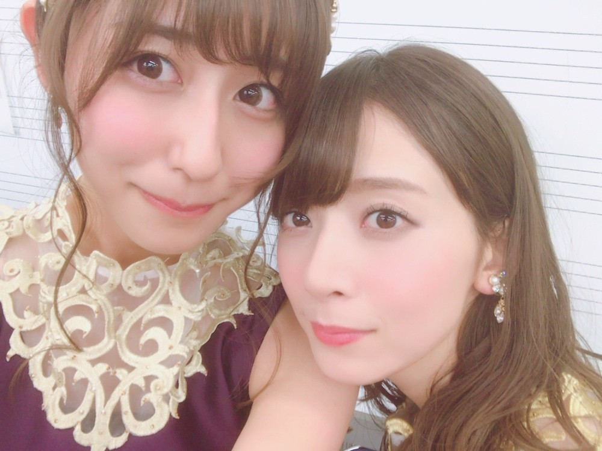
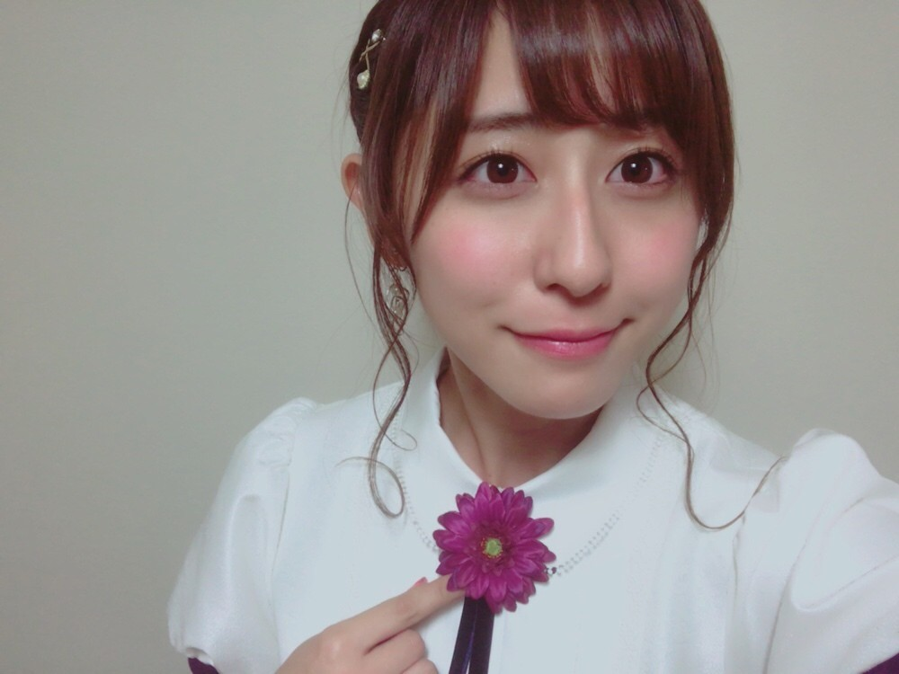
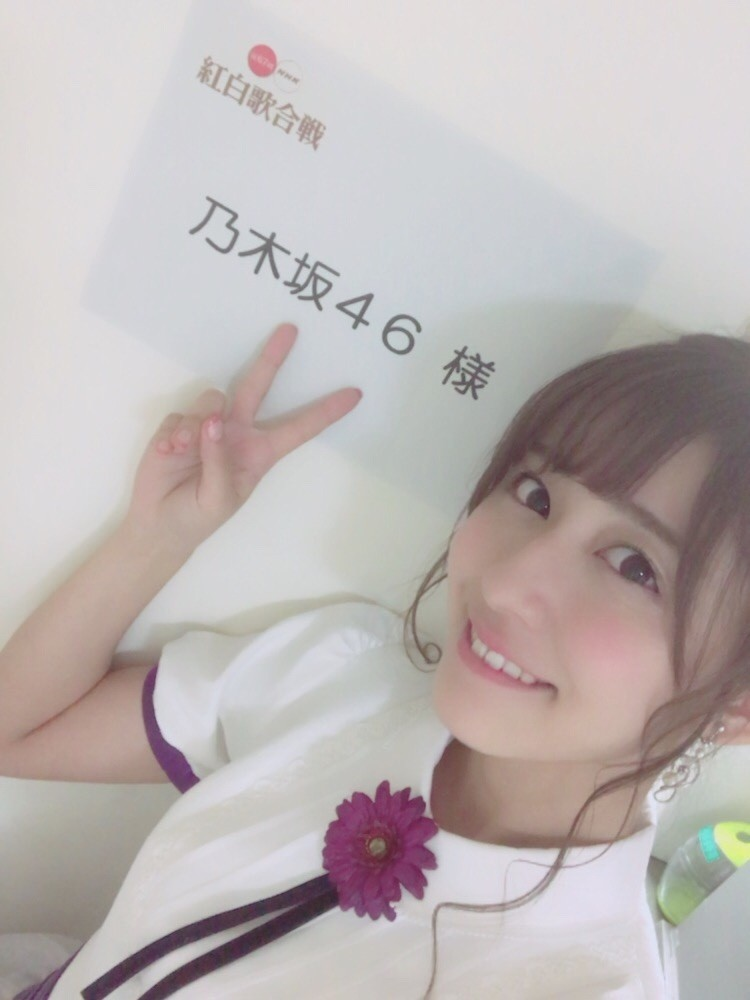

| 2016/12 31 Sat | 大晦日。 |
ちはるーむへようこそ。
今日は大晦日。
2016年12月31日。
今年も皆さんありがとうございました！！
そして紅白歌合戦を見てくださった皆さん
応援してくださっている皆さん
ありがとうございました\( ˆ ˆ )/
私たちは去年に引き続き、
2回目の出演。
本当に嬉しいですし光栄だなと感じます。
そしてアンダーもみんなで出られて良かった...！
感謝で一杯です。
またひとつ、素敵な思い出になりました。

そしてななみんはラストステージ。
一緒のステージに立ててよかったな〜
本番の後に見たモニター、
ななみんとても綺麗だった！
そしてずっと練習していたソロパートも
今までで一番良かった◎
やっぱりななみん素敵！♡

今年は昨日のブログに書いた通り
色々な経験をさせて貰えて
とっても充実した一年でした。
特に私の中で大きかったのは
毎日書き始めた、ブログです。
今まではあまり更新をしていなく
ファンの方に寂しい思いをさせたりだとか
一回一回のブログに書きたいことがありすぎて
全然まとまらない内容だったりだとか
握手会で話せるタイムリーな話題が
全然無かったりだとか
色々と迷惑をかけてしまっていたので、
ブログを毎日更新しようと決めました。
毎日更新する事によって
握手会で色んな方が褒めてくださったり
コメントにより色んな方との繋がりを感じたり
毎日更新して良かったなと思う事ばかりです。
毎日こんな私のブログを読んでくださっている
皆さん、本当にいつもありがとうございます。
嬉しいですし、支えになっています。
皆さんのためにブログをこれからも
続けていきたいと思います。
これからも読んでくださいますか...？ヽ(；；)丿

--------------------------------♡
♬ ChihaMusic
「蛍の光」
大晦日といったらこの曲。
年末にはこの曲を聞かなきゃ
今年が終わらないな、とも思います。
今まではお家でこの曲を聴きながら
過ごした大晦日でしたが
去年今年は紅白のステージで
素敵な出演者の皆さんと
同じ場所で歌えていることが嬉しいです。
また来年も歌えたら
本当に幸せです。

今年の年始のブログで掲げた目標、
有難いことに達成できたものもあれば
残念ながら達成できなかったものもあります。
大きい目標も、小さい目標も、
来年は達成出来るように
これからも精進していきたいと思います！
今年も応援してくださった皆さん
ありがとうございました！
来年も、また宜しくお願い致します(﹡ˆ ˆ﹡)
良いお年を。
斎藤ちはる
コメント(395)
2016/12/31 22:54